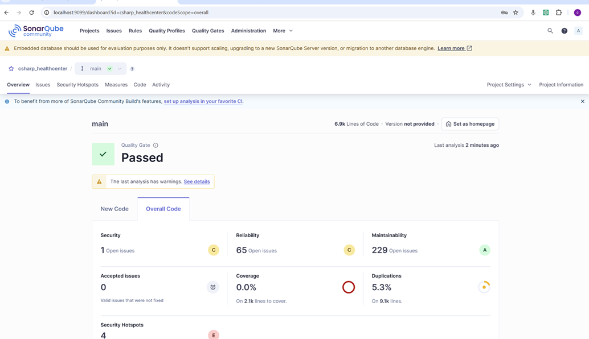
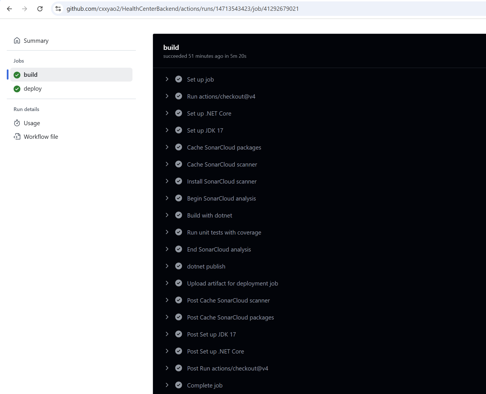

Unlock the Power of SonarQube
In the fast-paced world of software development, where efficiency and quality are paramount, incorporating SonarQube into your workflow is not just a choice—it's a game-changer. The sooner you start using SonarQube, the better off you'll be. This powerful tool acts as a vigilant guardian for your codebase, helping you establish and maintain excellent coding habits from the get-go.
Why Early Adoption is Key
Think of SonarQube as your personal code mentor. When you start using it early in a project, it immediately begins analyzing your code for a wide range of issues. It catches simple mistakes like inconsistent naming conventions, which, if left unaddressed, can lead to confusion as your codebase grows. It also identifies more complex problems, such as potential security vulnerabilities or code that's difficult to understand and maintain. By flagging these issues right away, SonarQube trains you to write cleaner, more robust code, setting a high standard for your coding practices that will serve you well throughout your development journey.
My Journey with SonarQube
Now, let me walk you through how I integrated SonarQube into my development process.- Installing the SonarQube extension in my IDE
The first step was installing the SonarQube extension in my Integrated Development Environment (IDE). This was a straightforward process, but it's crucial as it provides real-time feedback as you code. With the extension in place, I could see code quality issues highlighted right in my IDE, allowing me to fix them immediately. It's like having a built-in code checker that constantly watches over your shoulder, ensuring that your code meets the expected standards.
- Installing the SonarQube service on my PC
Next, I installed the SonarQube service on my local PC. While this seems simple enough, there's a critical aspect to keep in mind: port availability. SonarQube runs on a specific port, and if that port is already in use by another application, it can cause conflicts and prevent SonarQube from starting properly. Before installation, I made sure to check which ports were occupied on my system. I used simple commands or port monitoring tools to verify that the default SonarQube port was free. This step is often overlooked but is essential for a smooth installation.
Download from official site, selecting the right version based on your operating system. Extract the files and open configuration file. Modify port if port 9000 is occupied. Default user name is admin and password is admin. change password at the first login. Create a local project if scanning local code. Install sonar tool globally. Run command on vscode IDE command line to scan code.  Modify code according to the scan result. ( I skip this step.) - Integrating SonarQube into Github actions pipeline
The final piece of the puzzle was integrating SonarQube into my development pipeline.
Add sonarqube to github actions workflow yml file. create your sonarqube account on sonarqube.io or other cloud platform. create token on it. Save the token in github secrets.  When encountering any error in github actions, read the log and google it.
Issue: You are currently running analysis through your CI. Make sure to disable this before enabling Automatic Analysis.The official documentation is also very helpful.
When encountering any error in github actions, read the log and google it.
Issue: You are currently running analysis through your CI. Make sure to disable this before enabling Automatic Analysis.The official documentation is also very helpful.
Lessons Learned and Tips for Success
The internet is a treasure trove of information, and Google is often your best friend. When I faced challenges with SonarQube configuration or encountered errors I didn't understand, a simple Google search usually led me to relevant forums, blog posts, or documentation that provided solutions.
While AI coding assistants have become an integral part of my daily routine, I've found that they have their limitations. When it comes to complex configuration issues with tools like SonarQube, AI assistants sometimes don't offer comprehensive solutions. In these situations, community forums shine. There, developers from all over the world share their experiences, offer advice, and discuss workarounds. The official documentation, too, is an invaluable resource. It provides detailed, accurate information about every aspect of SonarQube, from installation to advanced configuration, and is a reliable source when you need in-depth knowledge.
In conclusion, SonarQube is a powerful ally in your quest for high-quality code. By adopting it early and following the right steps for integration, you can elevate your coding standards and streamline your development process. And remember, when problems arise, don't hesitate to explore the wealth of resources available online—you'll almost always find the answers you need.